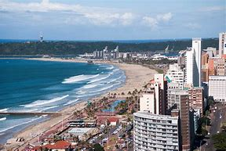
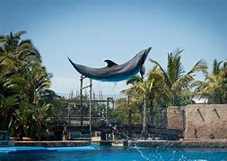

DURBAN BEACH
https://www.youtube.com/watch?v=yxwt2BBOPPQ
Durban beach is located along the eastern coast of South Africa,is known for its golden sands,warm waters,and vibrant atmosphere.It features a vibrant promenade,popular for walking,cycling,and dining,as well as various water sports like surfing and swimming.
USHAKA MARINE WORLD
https://youtu.be/GXTquLJW-30
Ushaka Marine World,located in Durban,South Africa,is a popular marine-themed park thhat features an aquarium,water park,and various entertainment options.The park is designed to educate visitors about marine life while providing fun activities such as water slides,animal encounters,and live shows .
MOSES MABIHDA STADIUM
https://www.bing.com/videos/riverview/relatedvideo?&q=Moses+Mabhida+Stadium+Tour&&mid=590C17DDCE315C99A065590C17DDCE315C99A065&&FORM=GVRPTV
Moses Mabihda Stadium is a prominent multi-purpose stadium located in Durban,South Africa.It was opened in 2009,and it has a seating capacity of about 56,000 and is known for its iconic arch structure.The stadium was a key venue for the 2010 FIFA World Cup,hosting several matches,including the final.